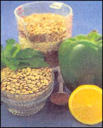
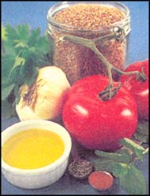
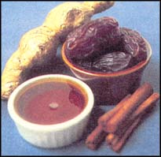

From bulgar to kasha: Secrets of cooking with grain.
If you wanted to eat like a prince, you had to be one. Even nobility had to rely on the occasional bowl of gruel to sustain them as they hung around a dank castle. Grain dishes also provided a convenient spoon food, since the fork didn't come on the scene until the year 1077.
Grains were, and still are, an economical food that is easy to eat with a spoon. But we now also know that whole grains are a good low-fat source of protein, complex carbohydrates and fiber, plus vitamins and minerals. While our governments USDA Food Pyramid is telling us that grains should be the bulk of our diet, the National Cancer Institute says that Americans are not getting the 20 to 35 grams of fiber that we need daily to help fight off cancer. One food historian speculated that during the Dark Ages, people ate at least 50 grams of fiber daily. While plagues were causing people to drop like flies, cancer wasn't in the picture.
This doesn't mean, however, that we should load up on white rice and Wonder Bread. A whole grain consists of the bran, germ and endosperm. Refined grains have been stripped of the bran and germ, which contain most of the nutrients, leaving the endosperm with its complex carbohydrates. The government decided to replace this loss with a low dose of synthetic vitamins, calling the grain or flour "enriched" or "fortified." which makes about as much sense as having your teeth pulled so you can wear dentures. But it was unable to replace the soluble and insoluble fiber, which proves again that you can't fool Mother Nature.
So grab a spoon and dig in... the wine and ale are up to you.
1/2 cup each long-grain brown rice, pearled barley, wheat berries CI use hard wheat berries)
3 1/2 cups water
1/2 cup uncooked adzuki beans or another small bean (or use 1 cup canned beans. rinsed)
2 cups cooked corn, fresh or frozen,. defrosted and drained
4 green onions, chopped
1 green pepper, finely diced
Topping: cilantro or parsley (optional)
1/4 cup each: lemon juice, extra-virgin olive oil
I teaspoon curry powder
1/2 teaspoon each: cumin, coriander
3/4 to 1 teaspoon salt
freshly ground pepper
cayenne pepper to taste
In a large, covered saucepan, bring the water to a boil. Add the grains, cover and reduce to a simmer. Simmer for about 40 minutes or until the water is absorbed (grains should not be sticking to the bottom of the pan) Let the pan cool, covered, for at least 15 minutes. While the grains are cooking. simmer the beans in a covered saucepan with enough water to cover for about 50 minutes or until tender. Drain and put into a large mixing bowl. Add the chopped vegetables. In a small bowl, whisk together the dressing. Stir the cooled grains in with the vegetables and beans. Pour on the dressing and toss until blended. Serve topped with chopped cilantro or parsley.
Variation: Try using green lentils (not baby lentils) instead of bean,.
Ready to eat in fifteen minutes, this easy pilaf is great with grilled chicken breasts or fish.
1 tablespoon olive oil
1 medium onion, finely chopped
2 large garlic cloves, minced
1/2 green pepper, finely diced
1/2 red pepper, finely diced
2 teaspoons each: ground coriander, ground cumin
dash cayenne pepper
1 cup quinoa
1 2/3 cups water
1/3 cup toasted pine nuts
1/4 teaspoon salt or to taste
freshly ground pepper
finely chopped parsley (optional)
Put the quinoa in a strainer and rinse well. In a large skillet, sauté the onion and garlic over medium-high heat until softened. Stir in the peppers and spices for about a minute until fragrant. Add the quinoa and water, cover and simmer on low for 15 minutes. Remove from heat and let sit, covered, for 5 minutes. Meanwhile, in a dry skillet, toast the pine nuts over medium heat, shaking the pan every 30 seconds. Watch carefully so they don't burn. Stir the pine nuts, salt and pepper into the quinoa. Serve topped with chopped parsley.
2 cups whole wheat couscous
1 1/2 cups unsalted chicken broth, vegetable broth or water
1 1/2 teaspoons curry powder
1/2 teaspoon cumin powder
1/2 teaspoon salt
cayenne pepper to taste
2 tablespoons evtra-virgin olive oil
1 can (15 ounces) garbanzo beans, rinsed
1 red pepper, diced
2 small zucchini, diced
1 medium red onion, chopped
3 large cloves garlic, minced
1/2 cup chopped cilantro or parsley
Put the couscous in a large bowl and have a lid ready. Bring the broth to a boil, remove from heat and mix in the spices. Stir the broth into the couscous and cover for 15 minutes. Meanwhile, chop the vegetables. Heat up 1 tablespoon of oil in a large skillet over medium-high heat and add the vegetables. Saute until almost tender, stirring frequently. Stir in the garlic and cook another few minutes. After the couscous has been sitting for 15 minutes, add the other tablespoon of olive oil and fluff up the mixture with a fork so there aren't any clumps. Add the beans and vegetables and toss. Serve topped with chopped cilantro or parsley.
My husband thought the couscous needed additional olive oil or a sauce. Here's a quick sauce similar to one that we had over a vegetable couscous in a Middle Eastern restaurant:
Sauce (optional):
1 cup plain, smooth-style bottled marinara sauce (without vegetables)
1 cinnamon stick
Simmer ingredients in a saucepan for at least 5 minutes. Drizzle over couscous.
Tabbouleh Salad
I usually make lots of this Middle Eastern salad when we have an abundance of garden tomatoes, but it's good in the winter months also since parsley and plum tomatoes are readily available. A Lebanese friend once told me that the secret to good tabbouleh is to use plenty of parsley and a good quality olive oil.
1 cup bulgur
1 1/4 cup boiling water
1/3 cup lemon juice
3 tablespoons extra-virgin olive oil
1/2 teaspoon salt
dash of cayenne pepper and freshly ground pepper
1 large clove garlic
1 1/2cups chopped curly parsley
4 green onions, chopped
1 small cucumber, peeled and cut into half-inch cubes
2 medium-size tomatoes or 4 plum tomatoes, cut into half-inch cubes
mint leaves (optional)
Put the bulgur in a large mixing bowl. Stir in the boiling water, cover and let sit for about 30 minutes until the water is absorbed. Whisk together the dressing in a small bowl and set aside. In a food processor, mince the garlic and parsley until the parsley is chopped very fine. (You can mince it by hand but this way is easier.) When the bulgur is ready, drain off any excess water and add the garlic, parsley and green onions. Stir in the dressing. If you're serving the salad within a few hours, stir in the cucumbers and tomatoes, then refrigerate. If you want to eat it the next day, store the cukes and tomatoes separately in a plastic container.
At serving time, stir them into the salad. Taste to see if it needs additional salt and pepper. Serve on a bed of fresh greens and top with fresh mint. This salad is best the same day because the cukes and tomatoes will make it too watery.
Variations: If you don't want to buy the Third World cukes and tomatoes that are available during winter months, try other ingredients instead, such as celery, radishes, red peppers, black olives or toasted pine nuts. I like to crumble feta cheese on top of my tabbouleh salad. Instead of bulgur, try couscous for a lighter tabbouleh.
For those of you who long for Uncle Ben's plain ol' white rice, this low-fat, nondairy dessert is for you. Rice milk will also work for this recipe, but I prefer 2% fat soy milk.
3 cups vanilla soy milk (I use 2% fat for a creamier pudding)
1 cup water
4 thin slices gingerroot
15 whole cardamom pods
3 short cinnamon stick
1 1/4 cups white basmati or long-grain
white rice (brown rice will not work)
1/2 cup maple syrup
1 teaspoon good quality vanilla cup
1/2 chopped dates*
In a large saucepan, put 1 cup of the soy milk, plus the water, gingerroot, cardamom, cinnamon and rice. Bring to a boil, then immediately reduce to a simmer and cover. Simmer for 20 minutes until the rice is tender. Remove the gingerroot, cardamom and cinnamon sticks, making sure to keep the cardamom pods intact because the seeds inside are bitter. Discard. Stir in the remaining 2 cups soy milk, maple syrup, vanilla and dates. Pour into a plastic container or bowl and let cool at room temperature. Eat warm or refrigerate. The pudding will thicken as it cools, so you may need to stir in additional soy milk. Serve in glass bowls topped with a sprinkling of cinnamon and sugar.
*I buy whole, pitted dates because date pieces usually dry out. Fresh dates should be soft and slightly sticky. Chop into small pieces with a sharp knife or scissors.
|
|
 |
 |
|
 |
|
|